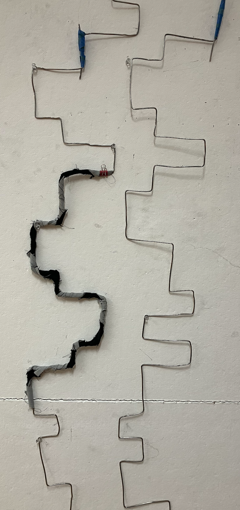
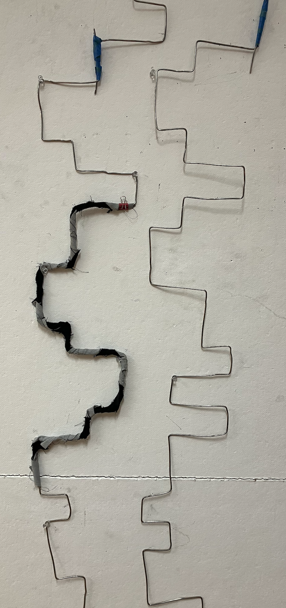
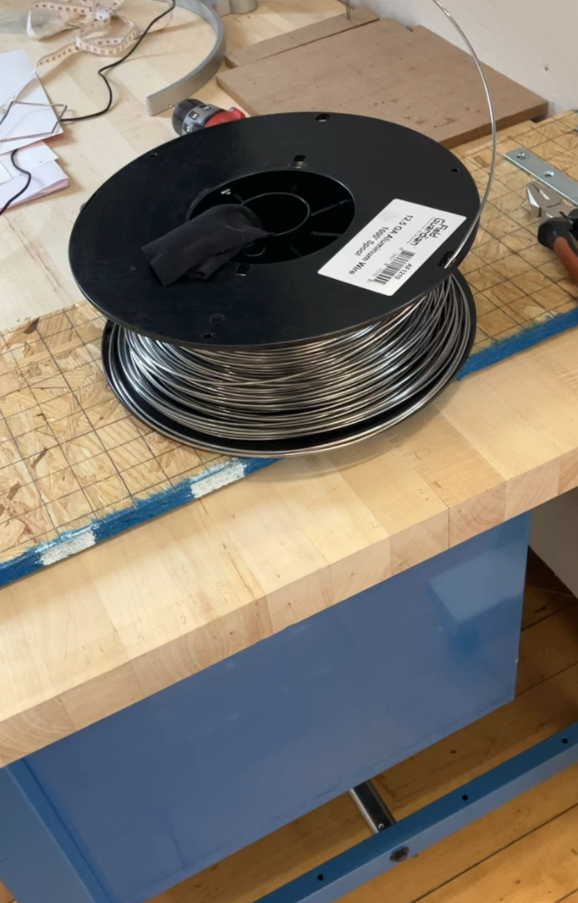
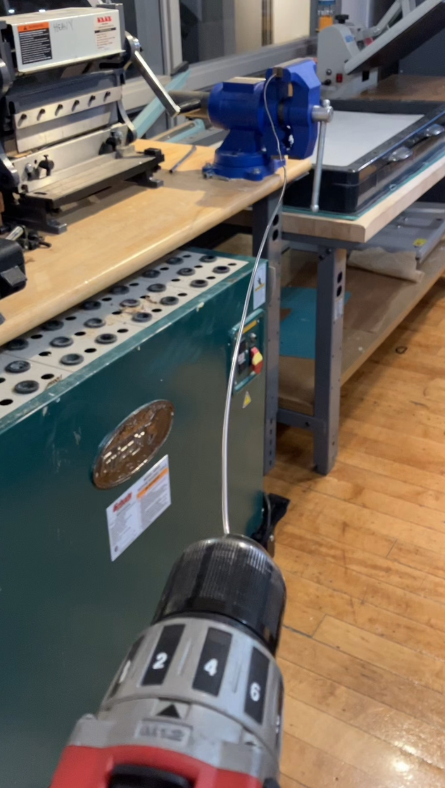
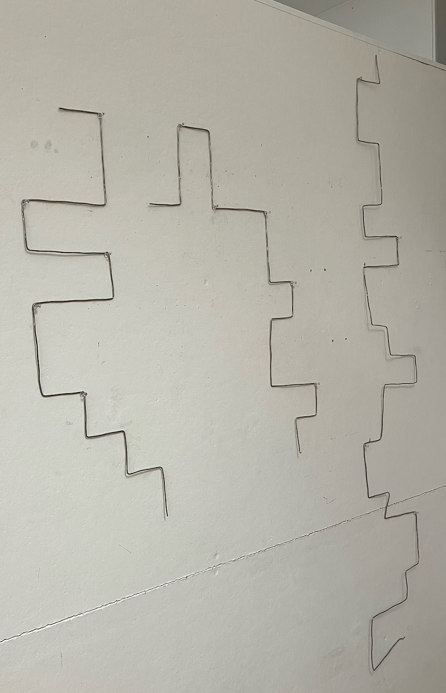
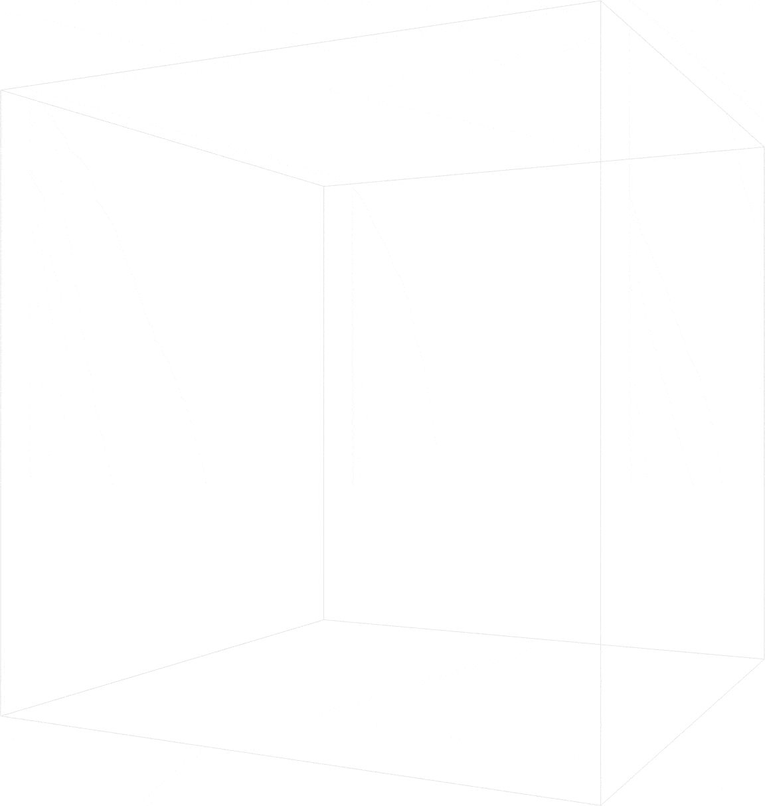

photos from Vida <3
| 5' 1" | 1L, 2R, 1R, 2L, 2R, 1L, 1L, 1R, 1R, 1L, 2L, 2R, 1R, 1L, 1R, 1L, 2L, 1R, 2R, 1L, 1L, 2R | 22 |
| 10' 0" | 1R, 2L, 2L, 1R, 1L, 2R, 1R, 2L, 2R, 1L, 2L, 1R, 1L, 2R, 2R, 1L, 1R, 2L, 2L, 1R, 1R, 1L, 2L, 1R, 2L, 2R, 1R, 1L, 1R, 1L, 1R, 1L, 2L, 1R, 1R, 1L, 2L, 1R, 1L, 1R, 2L, 1R, 1L, 1R | 44 |
| 10' 1" | 1R, 1L, 1L, 1R, 2L, 2R, 1R, 1L, 2R, 2L, 1L, 2R, 1R, 2L, 2L, 1R, 1R, 1L, 1L, 1R, 2L, 2R, 1R, 2L, 1L, 2R, 1R, 1L, 2R, 2L, 2L, 1R, 1L, 2R, 1R, 2L, 1R, 1L, 2L, 1R, 1L, 2R | 42 |
| 5' 1" | 2R, 1L, 1R, 1L, 2R, 1L, 2L, 2R, 1R, 1L, 2L, 2R, 2R, 2L, 1L, 2R, 2L, 1R, 2L | 19 |
| 5' 1" | 1R, 2L, 1R, 1L, 2R, 2R, 1L, 1L, 1R, 2R, 1L, 1L, 1R, 1L, 2R, 1L, 1R, 1L, 2R, 1R, 1L, 1R, 1L, 1R | 24 |
| 10' 1" | 1L, 2L, 1R, 1L, 1R, 1L, 2R, 1L, 2R, 1R, 2L, 2R, 1L, 1L, 2R, 2R, 1L, 2R, 1L, 1L, 2R, 2R, 1L, 2L, 2R, 1R, 2L, 1R, 1L, 2L, 1R, 1R, 1L, 1L, 2R, 2R, 1L, 1R, 1L, 1L, 2R, 1R, 1L | 43 |
| 5' 1" | 1R, 1L, 1L, 1R, 1R, 1L, 2L, 1R, 2R, 1L, 1L, 2R, 1R, 2L, 2L, 1R, 2R, 1L, 1L, 1R, 1L, 2R, 2L | 23 |
| 10' 1" | 2R, 1L, 2R, 1R, 1L, 2L, 2R, 1R, 2L, 1L, 2R, 1R, 1L, 2R, 1L, 1L, 1R, 1L, 2R, 2R, 2L, 1R, 1L, 2L, 1R, 2L, 2R, 1R, 1L, 1R, 1L, 2R, 1L, 2L, 2R, 1R, 2L, 1L, 1R, 1R, 1L, 2L | 42 |
| 10' 1" | 2R, 2R, 1L, 1R, 1L, 1L, 1R, 2L, 2R, 1R, 1L, 2R, 2L, 1L, 1R, 1L, 2R, 2R, 1L, 1R, 2L, 1R, 2L, 2R, 1L, 2L, 2R, 1R, 1L, 1R, 1L, 2L, 1R, 2R, 1L, 1L, 2R, 1R, 2L, 2L, 1R | 41 |
| 5' 1" | 1L, 2R, 1R, 2L, 2R, 1L, 2L, 2R, 1R, 1L, 1R, 1L, 2L, 1R, 1R, 1L, 1L, 2R, 1R, 2L, 1L, 1R | 22 |
| 10' 1" | 2L, 2R, 1R, 1L, 1R, 2L, 1L, 2R, 2R, 1L, 1R, 1L, 1L, 1R, 2R, 1L, 1R, 1L, 1R, 2L, 2R, 2L, 1R, 1L, 2L, 1R, 2L, 2R, 1R, 1L, 2R, 1L, 1L, 2R, 2R, 1L, 1R, 1L, 1R, 1L, 2L, 2R, 2R | 43 |
| 10' 1" | 1L, 2R, 1L, 2L, 2R, 1R, 2L, 2L, 1R, 1L, 2R, 1R, 2L, 2R, 1L, 2L, 1R, 2R, 1L, 1L, 1R, 2L, 2R, 1R, 1L, 1R, 2L, 1L, 1R, 1L, 2R, 2R, 1L, 1R, 1L, 1R, 2L, 1R, 1L, 1R, 1L, 1L, 1R | 43 |
| 5' 1" | 1R, 1L, 1L, 2R, 1R, 2L, 1R, 2L, 1R, 1L, 2R, 2L, 1R, 1L, 1L, 2R, 2R, 2L, 1L, 1R, 1R, 1L | 22 |
| 5' 1" | 1R, 2L, 1R, 1L, 1R, 1L, 2L, 1R, 1R, 1L, 1L, 2R, 2R, 1L, 1R, 1L, 2L, 2R, 1R, 1L, 2L, 2R | 22 |
| 10' 0" | 1R, 1L, 2R, 2L, 1L, 1R, 1R, 1L, 1L, 1R, 2R, 1L, 2L, 1R, 1R, 1L, 1L, 1R, 2R, 1L, 2L, 2R, 1R, 1L, 1L, 2R, 1R, 1L, 1R, 1L, 2R, 1L, 1L, 2R, 2R, 1L, 2R, 1L, 2R, 1L, 2R, 2L, 1R, 2L | 44 |
| 5' 1" | 2L, 2R, 1R, 2L, 1R, 1L, 1L, 1R, 1R, 1L, 2L, 2R, 1R, 1L, 2L, 2R, 1R, 1L, 1R, 1L, 2R, 1L | 22 |
| 5' 0" | 2L, 2R, 1R, 2L, 1L, 1R, 1R, 1L, 2L, 2R, 2R, 1L, 1L, 2R, 1R, 2L, 2R, 1L, 2L, 1R | 20 |
| 4' 1" | 1R, 1L, 1L, 2R, 2R, 1L, 1R, 1L, 2L, 2R, 1R, 1L, 2L, 2R, 1R, 1L, 2R, 2L, 1R | 19 |
 


"To invite is to request a presence, ... a gentle drawing out. ... Where, what, and who is it inviting us to? ... How will you answer the call, and what will you be bringing?"
| 4ft 11in | 1L, 2R, 1L, 2R, 2R, 1L, 1L, 1R, 1R, 1L, 2L, 2R, 1R, 1L, 1R |
| 9ft 10in | 1R, 1L, 2L, 1R, 2R, 1L, 1L, 2R, 1R, 2L, 2L, 1R, 1L, 2R, 1R, 2L, 2R, 1L, 2L, 1R, 1L, 2R, 2R, 1L, 1R, 2L, 2L |
| 10ft 1in | 2L, 1R, 1R, 1L, 2L, 1R, 2L, 2R, 1L, 1R, 1L, 1R, 1L, 2R, 2R, 1L, 2R, 1L, 2L, 1R, 1L, 2R, 2L, 2R, 1R, 1L, 2L, 1R |
| 4ft 8in | 1R, 2R, 1L, 1L, 2R, 1L, 1R, 2L, 2R, 1L, 1R, 1L, 2R, 1R |
| 4ft 8in | 1R, 2L, 2R, 1L, 1L, 2R, 2R, 2L, 2L, 1R, 2L, 2R |
| 10ft 4in | 2R, 1R, 2L, 1L, 2R, 1R, 1L, 2R, 2L, 1L, 1R, 1L, 2R, 1R, 1L, 1R, 1L, 2R, 1L, 1L, 1R, 2R, 1L, 1L, 1R, 1R, 1L, 1L, 2R, 1R, 1L, 1R |
| 4ft 8in | 1R, 1L, 2L, 1R, 2L, 1R, 2L, 2R, 1L, 1R, 2L, 2R, 1R |
| 10ft 1in | 1R, 2L, 1R, 1L, 2L, 2R, 1R, 2L, 2L, 1R, 2R, 1L, 1L, 2R, 1R, 1L, 1R, 1L, 2L, 2R, 1R, 1L, 1R, 1L, 2L, 1R, 1R, 1L, 1L, 1R |
| 9ft 10in | 1R, 1R, 1L, 1L, 2R, 1R, 2L, 1L, 1R, 2R, 1L, 2L, 2R, 1R, 2L, 1L, 1R, 1R, 1L, 2R, 2L, 2R, 1L, 2R, 1L, 1L, 2R, 2R |
| 4ft 8in | 2R, 1L, 2R, 1L, 2L, 1R, 1L, 2R, 1R, 1L, 1R, 1L, 2L, 2R |
| 10ft 4in | 2R, 2R, 1L, 1R, 2L, 1L, 2R, 2R, 1L, 1R, 1L, 1L, 2R, 1R, 2L, 2L, 1R, 2R, 1L, 1L, 1R, 1L, 2R, 2R, 2L, 1R, 1L, 1R, 1L |
| 10ft 1in | 1L, 1R, 2L, 2R, 1L, 1L, 2R, 2R, 1L, 1R, 1L, 2L, 2R, 1R, 1L, 2R, 1L, 2L, 2R, 1R, 2L, 2R, 1L, 1L, 1R, 1L, 2R, 1R |
| 4ft 5in | 1R, 2L, 1R, 1L, 2L, 1R, 2L, 2R, 1R, 1L, 2R, 1L, 2L |
| 4ft 11in | 2L, 2R, 1R, 2L, 2R, 1L, 1L, 1R, 1R, 2L, 1R, 1L, 1R, 1L, 2R |
| 10ft 4in | 2R, 1L, 2L, 1R, 1L, 2R, 2R, 1L, 1R, 1L, 2R, 1L, 2R, 2L, 1R, 1L, 1L, 1R, 1L, 2R, 2R, 2L, 1R, 1L, 1R, 1L, 1R, 2L, 1R, 1L |
| 4ft 8in | 1L, 1R, 1L, 2L, 1R, 1R, 1L, 1L, 2R, 2R, 1L, 1R, 1L, 2L, 2R |
| 4ft 11in | 2R, 1R, 1L, 2L, 2R, 1R, 1L, 2R, 2L, 1L, 1R, 1R, 1L, 1L, 1R |
| 9ft 10in | 1R, 2R, 1L, 2L, 1R, 1R, 1L, 1L, 1R, 2R, 1L, 2L, 2R, 1R, 1L, 1L, 2R, 1R, 1L, 1R, 1L, 2R, 1L, 1R, 2L, 2R, 1L, 2R, 1L |
| 9ft 10in | 1L, 2L, 1R, 2L, 2R, 1R, 2L, 2L, 2R, 1R, 2L, 1R, 1L, 1L, 1R, 1R, 1L, 2L, 2R, 1R, 1L, 2L, 2R, 1R, 1L, 1R, 1L, 2R |
| 5ft 2in | 2R, 1L, 2L, 2R, 1R, 2L, 1L, 1R, 1R, 1L, 2L, 2R, 2R, 1L |
| 10ft 1in | 1L, 1L, 2R, 1R, 2L, 2R, 1L, 2R, 1L, 1L, 1R, 1L, 2R, 2L, 1R, 1L, 1L, 2R, 2R, 1L, 1L, 2R, 2R, 1L, 1R, 2L, 2L, 1R |
| 4ft 11in | 1R, 1R, 1L, 1L, 1R, 1L, 2R, 1R, 2L, 1R, 1L, 2L, 1R, 2R, 1L, 1L |
| 4ft 11in | 1L, 2R, 1R, 2L, 2L, 1R, 2R, 1L, 2L, 2R, 1R, 1L, 1R, 1L |
| 1ft 10in | 1L, 2L, 1R, 1R, 1L, 1E |
|  |  |  |


^^^ fill a space the size of my D+M studio cubicle
^^^ place visible connections according to Kolakoski
| in | out | quad |
|---|---|---|
| L | U | I |
| R | U | II |
| U | L | III |
| U | R | IV |

There are 2 parts to the thesis project: a written paper and a physical object.
The D+M program focuses on "research-based art", so we're simultaneously doing research and doing art projects
(whatever form those take), which inform each other in sort of a repetitive, overlapping process.
Conceptually (for the paper), I'm reflecting on this art-research process as I do it, and broadening it as a way
to think about learning math. Specifically, I'm interested in self-reference and strange loops, and the
feeling of moving back-and-forth between different "parts" as a way of moving forward (in time or space or
understanding). I'm referencing sources from math, pedagogy, philosophy, psychology, etc.
For the physical object, I'm using the Kolakoski sequence as a blueprint for folding a wire structure,
and I'm thinking about how the process of embodying/physically constructing a mathematical object is a
form of research, self-reflection, and "knowledge"-creation. I chose the Kolakoski sequence in particular
because it embodies the phenomenon of repetitive, overlapping self-reference, which in turn supports
my interests in "strange loops" and how similar patterns are nested within each other, allowing us to
"do something here to do something else there", or think about a thing in multiple
ways at the same time.
Emphasizing a "back-and-forth" motion/gesture is helping me ground the confusing theory in a general form.
I find that back-and-forth/oscillation/"alternating with the contrary" describes many aspects of my work:
moving between art and math, between reading and writing, between researching and making, between thinking and doing,
between showing and hiding, between sunrise and sunset, between inhaling and exhaling, between poles of
psychological conflicts, etc. These not-quite-"binaries" (math/art, research/creation, theory/praxis, etc.)
blur as I hop and get lost between them.

1
I propose creative expression as a valuable dimension of mathematical rigor and as a pedagogical tool that can bring joy and open-endedness into advanced math classrooms. By emphasizing the poetic frameworks already present in the study of mathematics and by broadening academically-accepted ways of “understanding” and “knowing,” we (yes, you too!) can do and share math in beautiful, expressive, artistic ways.
2
bouncing between bounds of a binary
bippity boppity! let’s break brains and bread
balance or belly flop, what’s mine is yours:
bumptious and bumbling and barely able
i offer it broken and let you like it that way
|
|
 |
"have patience with everything unresolved in your heart and try to love the questions themselves as if they were locked rooms or books penned in a language most foreign to you. Don’t search for answers now that cannot be given because you could not live them. And it is about living it all. Live the questions now."
"I felt that the disorder of things, if limited and somehow honest, might best correspond to our state of mind. But I detested the arbitrary disorder that is an indifference to order, a kind of moral obtuseness, complactent well-being, forgetfulness."
"through her own research, which is a performative research, she performs the research itself" -Mariela
How can repeated back-and-forth gestures accumulate into new knowledge?
How can embodying math develop mathematical understanding beyond academic rigor?
What is the interplay between constraint and expression in mathematical and artistic practices?
UNCERTAINTY Art school is a confusing place. In math, in each term and logical step is precisely defined, so the lack of such clarity in art has been very hard for me to adjust to. |
|||
|---|---|---|---|
| authority, anarchy
The most common way people lose power is
by thinking they don't have it.
Inspired by the teaching philosophies of Mariela Yeregui, Alice Plane, Houman Harouni, Jacques Rancière, etc., I'm interested in breaking down traditional assumptions about who holds authority, both in classrooms and (by extension, perhaps via heterotopia) the broader world. |
climate change The climate crisis is urgent and yet many people don't know what they can do about it or who is going to "fix" it. My art (and the rest of my life) is low-waste. Living "zero waste" gives me a tangible foothold in the fight against climate-change-related fatigue/uncertainty. | multicultural education For my undergraduate thesis, I wrote about the need to build confusion/uncertainty/a plurality of stories into K-12 curriculums to combat "the master narrative of US history" beyond just superficial holidays or international nights. | decolonialism Colonialism is violent, fatal, oppressive, restrictive, etc. Also, I've built myself in the world as it is, and gotten used to privileges and challenges as I experience them. Interpreting decolonialsm as a need to break all of my mental habits and to question anything I hold certain is good and also can introduce debilitating uncertainty. |
| brain fog I lived most of the past year with a very foggy brain. Last year, as I was opening up my brain to "art," uncertainty felt overwhelming and all-consuming in a whole new way. | definitions rhizome, generative, realm, worldbuilding, heterotopia, speculative, ...huh??? what do these words even MEAN?!? | are there rules?
What is one supposed to DO at art school?
"There are some things which even people with [artistic] temperament must know before they become Artists and these are the secrets which are revealed at Art school" - e.e. cummings Am I doing it wrong? (No. But geesh, it feels like it!) |
are we supposed to break the rules? "At RISD, there are no rules and they want you to break all the rules." -Gabriel (my roommate, MLA 2026) |
CONSTRAINT Feeling overwhelmed be the enormous uncertainty of studying art, I found solace in the constraint. Defining a constraint can reduce an overwhelming problem into a manageable task. But don't think that the imposition of a constraint reduces potential complexity! On the contrary, constraints are fertile ground for complexity, creativity, and self-expression. |
||||
|---|---|---|---|---|
| mathematical There are many examples of mathematical constraints. Some that interest me include: ciphers, axiomatic reasoning, cellular automata, computation, isometry, integers and divisibility. | small rules Small rules expand into vast complexity. A canonical example of this is John Conway's Game of Life, which is a special case of Cellular Automata. The study of small rules and the crazy behavior that ensues from repeatedly applying them was coined "Ruliology" by Stephen Wolfram. "Rules" can also be interpreted more broadly as a set of shared and/or imposed assumptions (in math, these are called "axioms"), which can range in specifity and purposes. | strange loops Douglas Hofstadter's book Gödel, Escher, Bach: An Eternal Golden Braid centers on the idea of self-referential feedback loops, and their prevelance in mathematican Gödel's logic (and his famous Incompleteness Theorem), artist Escher's drawings, and composer Bach's music. Also, Michel Foucault writes about heterotopias and the idea that small windows of experience can mirror larger or smaller ones at different scales. There can be levels to things where the levels are all structurally the same. | the art itself The constraint IS the art. I'm inspired by the Ouvrior de littérature potentielle (OuLiPo) and their development of poetic constraints, which are often mathematically-inspired. The group creates not just finished works of writing, but constraints that serve as templates for further (i.e., potential) work. | psychological guiderail You can sometimes most easily do something while doing something else. Focusing on satisfying a constraint can be front-and-center in the mind, allowing semi/sub-conscious processes to reveal themselves in our periphery. For example, you may find it hard to write a love poem directly, but if you start writing poems with strict mathematical constraints, you may find that they all turn out to be about love. |
|
1, 2, 2, 1, 1, 2, 1, 2, 2, 1, 2, 2, 1, 1, 2, 1, 1, 2, 2, 1, 2...
The
Kolakoski sequence
is both an example of how a small rule
leads to complexity and of a self-referential (strange-loop-y)
integer sequence.
I think this sequence could be the basis of a construction for the thesis show. At its heart (as I see it), the Kolakoski sequence demonstrates how we work endlessly to describe an unattainable yet well-defined self. The sequence was popularized by William Kolakoski, who was a mathematician who went to art school. I visited the Kolakoski Collection at Carnegie Melon University this summer to read through some of his notes and drawings, and I felt quite validated that a lot of it really resonated with me. |
||||
|
EMPTY SPACE FOR NEW IDEAS Not everything fits in little boxes :) | ||||||||